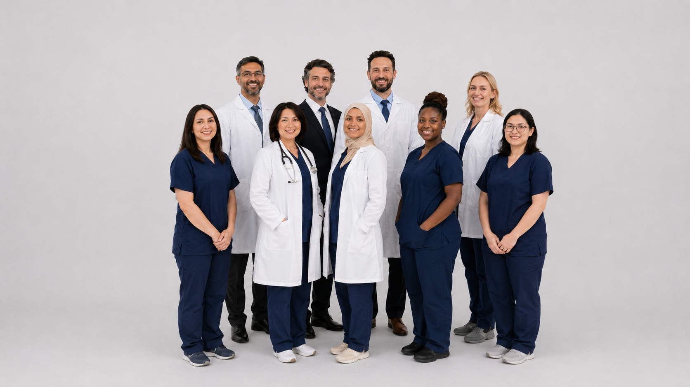

Интраокулярные линзы (ИОЛ)
Премиальные линзы для коррекции катаракты и астигматизма. Мы предлагаем полный спектр решений: монофокальные, мультифокальные и торические ИОЛ от мировых лидеров индустрии.
Подробнее
Инновационные решения для офтальмологии и кардиологии: интраокулярные линзы, медицинские устройства и оборудование нового поколения.
Узнать больше
Премиальные линзы для коррекции катаракты и астигматизма. Мы предлагаем полный спектр решений: монофокальные, мультифокальные и торические ИОЛ от мировых лидеров индустрии.
Подробнее
Инновационные системы для электрофизиологии и интервенционной кардиологии. РЧА-катетеры нового поколения и системы навигации для лечения сложных аритмий.
Подробнее
Миллионы людей ежегодно доверяют свое зрение нашим технологиям. Мы помогаем видеть мир во всех его красках.
Офтальмология
Многоцентровое исследование долгосрочной стабильности мультифокальных линз...
Подробнее
Обзор последних технологий в области криоабляции и радиочастотной терапии...
Подробнее
Миниатюрные безэлектродные системы: клиническая эффективность и безопасность...
ПодробнееМонофокальные, мультифокальные и торические ИОЛ подбираются под клиническую задачу и образ жизни пациента.
Это зависит от типа линзы и исходного состояния зрения. Премиальные ИОЛ могут снижать зависимость от очков.
Факоэмульсификация — это современный метод удаления катаракты с помощью ультразвука и последующей имплантации интраокулярной линзы.
Это малоинвазивная процедура для лечения нарушений сердечного ритма с помощью контролируемого воздействия на очаг аритмии.
Кардиостимулятор применяют при нарушениях ритма, когда сердцу требуется регулярная электрическая поддержка.
Сроки зависят от процедуры и состояния пациента; план наблюдения определяет лечащий врач.
Обсудим поставки, партнерство и подбор медицинских технологий для вашей клиники.